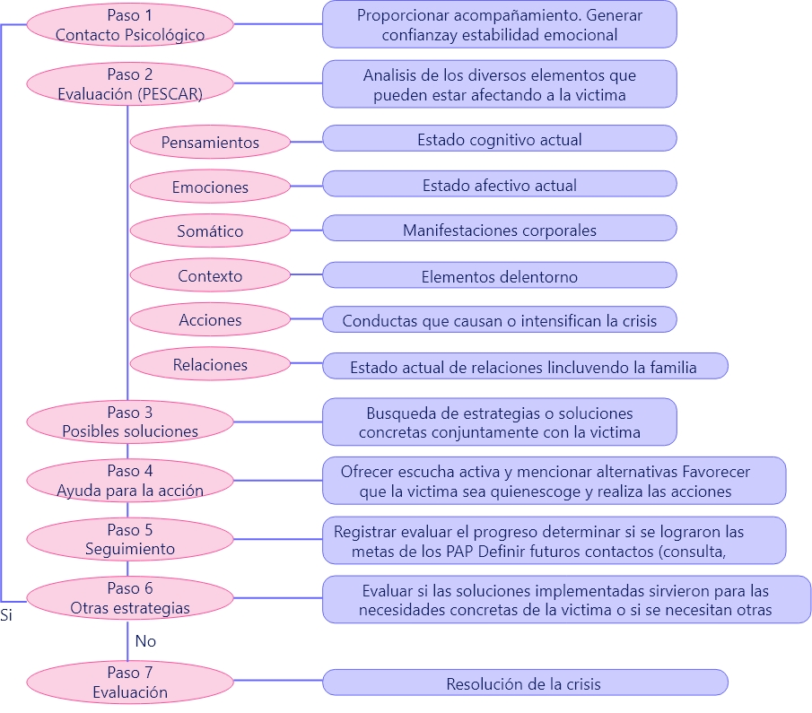
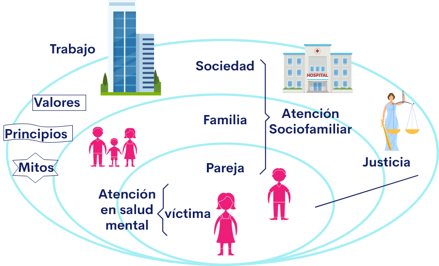

Introducción
Una atención en salud mental que inicie prontamente, que reconozca a las víctimas como sujetos de derechos, que las acompañen el proceso de reconocerse y que les brinde herramientas para lidiar con el día a día después del trauma, es lo que permitirá que puedan restablecer su equilibrio emocional, construir resiliencia y llevar adelante un nuevo proyecto de vida.
De lo contrario, tendrá menos posibilidades de afrontar el estrés agudo y el posible estrés postraumático, lo que puede hacer que los síntomas se conviertan en mucho más lesivos emocionalmente.
1. Impacto Psicológico
Sufrir una agresión por un agente químico es un evento traumático que involucra cambios corporales permanentes, así como la experiencia de agresión por una persona conocida. El daño en la piel, barrera que establece el límite entre lo que es propio y lo que está afuera, genera sentimientos de desintegración y confusión, con gran dificultad para la contención de las emociones y una ansiedad desbordante por la alteración de la imagen corporal, que es mayor cuando el compromiso es a nivel facial.
Teniendo en cuenta lo descrito anteriormente, inicialmente las víctimas presentan una crisis psicológica cuyos síntomas se pueden presentar a nivel emocional, cognitivo, conductual y fisiológico, ver tabla 1.
| Área | Síntomas | |
| Emocional | Choque Miedo Rabia Rencor Tristeza Depresión |
Desesperación Ansiedad anticipatoria Ansiedad generalizada Reacciones de pánico Sensación de perder el control Sentimientos de culpa |
| Cognitiva | Confusión Bloqueo mental Amnesia Negación Culpa Alteraciones de conciencia |
Sensación de impotencia Sensación de extrañeza o irrealidad Desorientación tiempo-espacio Dificultades de atención Dificultades de concentración Dificultad para tomar decisiones |
| Conductual | Inhibición Desconfianza Aislamiento Fatiga Agresividad Llanto, Gritos Hipocondriasis |
Hiper o hipoactividad Verborrea o mutismo Trastornos de la alimentación Alteraciones del sueño Abuso de tóxicos (alcohol, SPA) Actos antisociales Cambio o pérdida del rol social |
| Fisiológica | Hipersudoración Palpitaciones Taquicardia Hiperventilación Opresión torácica Tensión muscular Cefalea |
Midriasis Sensación de ahogo Mareos Náuseas Malestar general Parestesias Escalofríos y temblores |
Es importante iniciar una intervención en salud mental que ayude a la víctima a manejar la crisis y permita afrontar la situación y sus implicaciones, como dependencia de terceros y rechazo social y familiar. Se debe trabajar intensamente para que la víctima pueda recuperar su calidad de vida.
Sufrir una agresión por un agente químico es un evento traumático que involucra cambios corporales permanentes, de una pronta y adecuada intervención en salud mental depende el restablecimiento del equilibrio emocional de las víctimas.
1.1 Reacción a estrés agudo
Además de la crisis psicológica, las víctimas de ataques por agentes químicos pueden presentar un cuadro de reacción a estrés agudo caracterizado por ansiedad, episodios de reexperimentación y gran temor de volver a ser agredidas, que debe ser reconocido y manejado de forma precoz, durante la hospitalización y de preferencia por psiquiatras.
Se pueden diferenciar cuatro fases en la reacción a estrés agudo.
La víctima puede presentar estados de confusión como el delirium, fenómenos de despersonalización, trastornos del sueño como insomnio de múltiples despertares y pesadillas, irritabilidad e hiperalertamiento. Esta fase puede durar varias semanas.
Fase de reorientación: Salir del ámbito protector del hospital y enfrentar la propia deformidad corporal suele generar depresión y ansiedad. Pueden presentarse recaídas con síntomas depresivos y ansiosos.
Si bien algunas víctimas pueden haber asimilado el trauma a los 6 meses de ocurrido, en otros casos, este período puede ser de varios años. Depende de la intensidad del daño y de la forma en que se trató la agresión y las secuelas que presentó.
Fase de reacción: Comienza cuando se ha logrado estabilizar a la víctima (hacia la 6 semana).
Ya no hay peligro vital y la víctima comienza a reconocer el daño. Los sentimientos reprimidos o negados pueden salir a flote. Son sentimientos dolorosos, abrumadores, hay temor a que se repita el evento, pesadillas, ansiedad, tensión muscular, aumento de la irritabilidad.
Esta fase puede durar varias semanas o meses, según la extensión de la quemadura y las lesiones subsecuentes.
Suele observarse dificultad para adaptarse a las rutinas de la hospitalización (curaciones, alimentación, entre otras) y se evidencian alteraciones emocionales, entre las más frecuentes están los trastornos de ansiedad y depresión.
Fase de reparación: inicia en las últimas semanas de la estancia hospitalaria y continúa luego del alta. Puede durar de uno a seis meses con reacciones menos intensas, sentimientos de dolor más o menos intensos. Se vuelve a sentir interés por los hechos cotidianos. La víctima empieza a prepararse para enfrentar el mundo exterior.
Las víctimas de ataques con agentes químicos pueden presentar una reacción a estrés agudo, el cual debe ser manejado de manera precoz durante la hospitalización y de preferencia por psiquiatras.
1.2 Proceso de duelo
Luego de la fase aguda, las víctimas pasan por un proceso de duelo relacionado con la pérdida de su integridad corporal, así como de lo que eran antes de que ocurriera la agresión (autoimagen e identidad social). Las fases del duelo por las que atraviesa la víctima son:
Fase de negación: No se acepta la pérdida. Se niega a sí misma/o y/o al entorno que ha ocurrido la agresión o el daño corporal.
Fase de enfado: La víctima se siente enojada con todo, con todos y con ella misma por no haber evitado la agresión o el daño que le provocó la quemadura.
Fase de adaptación: Se asume la pérdida. No hay olvido, pero se empieza a vivir con la historia de haber sido víctima de un ataque por químicos.
Fase de dolor emocional: Se experimenta tristeza y dolor por la pérdida.
Fase de negociación: Intenta negociar alguna curación milagrosa que le devuelva su aspecto anterior.
Las víctimas pasan por un proceso de duelo relacionado con la pérdida de su integridad corporal, de su autoimagen e identidad social.
1.3 Respuestas en salud mental y necesidades de atención y acompañamiento de las víctimas.
Para una mejor aproximación a los impactos en salud mental de los ataques por agentes químicos y las necesidades en atención integral en salud mental de las víctimas, sus familias y las personas significativas de su entorno, se realizó un diagnóstico sobre las respuestas en salud mental y las necesidades de atención y acompañamiento a las víctimas.
Los hallazgos obtenidos en el proceso de investigación participativa son sistematizados en la siguiente tabla que muestran los impactos reportados por los y las participantes. Los impactos están relacionados con los sentimientos y emociones de las víctimas y sus familiares. Se determinaron con base en el modelo que distingue las fases de atención. (Cardona, Franco, 2020).
2. Cadena de custodia
Con base en las entrevistas realizadas a víctimas del hospital Simón Bolívar y la Fundación del Quemado y las recomendaciones de expertos, expertas y víctimas, los principales elementos para tener en cuenta al atender a una víctima de agresión por agente químico son los siguientes:

Actuar con serenidad y transmitir calma: se trata de una persona en estado de estrés agudo. Por lo general, en ese momento sienten gran temor por su propia seguridad y la de las personas cercanas.
Generar cierta privacidad creando una atmósfera de confianza y confidencialidad, respetando la dignidad personal (alejar curiosos, verificar que esté cubierta)
Saludar y presentarse: diga su nombre, su profesión y cómo le va a ayudar. Ejemplo. (“Soy…, estamos aquí para ayudarla…lo primero que vamos a hacer es lavar con agua el lugar donde le cayó el químico y, para ello, vamos a quitar la ropa de esa zona…”, “vamos a llamar a sus familiares, por favor dígame el nombre y el teléfono…”,” estamos esperando a la ambulancia, tan pronto llegue iremos al hospital…”).
Identificar con la víctima qué es lo que más la afecta: dolor de la quemadura, miedo o ansiedad por otras personas, etc.
Buscar una solución al problema en consenso con la víctima (analgésico, llamar a familiares) y establecer acuerdos sobre lo que ha de hacerse a partir de este momento (a quién avisar, quién le va a acompañar, etc.).
Hablar con amabilidad y delicadeza reconociendo su estado de estrés agudo.
Ganar su confianza (tono de voz, actitud, proximidad física) para que descargue su angustia y exprese sus sentimientos.
Mantener una comunicación verbal y no verbal (palabras, gestos, ademanes) que tengan en cuenta su cultura, edad y género.
Evitar toda comunicación verbal y no verbal, que la revictimiza. Evite preguntas como: “¿qué hizo para que la atacaran?” o frases como “tranquila que no fue nada” u otras similares.
Escucharla si desea hablar y no forzarla si no desea hacerlo.
Observar su respuesta emocional para definir su ayuda está siendo efectiva.
Proporcionar acompañamiento de un familiar o persona allegada si la víctima lo desea.
Servir de enlace con otros profesionales (personal de atención prehospitalaria o de urgencias) u otras personas (familiares, policía, etc.).
Es muy importante tener en mente lo que no se debe hacer en la atención psicológica
No se debe hacer
NO subestime su situación y dolor (“no se queje que no fue nada…”).
NO haga falsas promesas (“los médicos la van dejar como antes”).
NO indague por qué o cómo ocurrió el ataque (“¿qué hizo para que la atacaran?”).
NO obligue a hablar a la víctima si ella no lo desea.
NO comente con otras personas la historia de la víctima.
NO juzgue a la víctima por sus acciones o sentimientos.
NO utilice términos peyorativos.
NO haga gestos o expresiones que inquieten a la víctima.
NO crea que usted es responsable de solucionar todos los problemas.
Los componentes de los primeros auxilios psicológicos en las víctimas con agentes químicos se presentan en la figura siguiente, es importante tener en cuenta que generalmente los primeros auxilios psicológicos en el lugar de los hechos llegan hasta el paso 4. Los otros pasos casi siempre se realizan en el servicio de urgencias.
Durante el proceso de atención se debe evitar cualquier tipo de comunicación verbal y no verbal que revictimiza, es decir, que genere sentimientos de culpa en la víctima o que cuestione su relato.
2.1 Protocolo A, B, C, D, E para la aplicación de primeros auxilios psicológicos.
El protocolo ABCDE de primeros auxilios psicológicos, fue desarrollado en la Pontificia Universidad Católica de Chile, está diseñado para ser utilizado por cualquier persona que participe como apoyo asistencial a una crisis, sin ser necesariamente profesional de la salud mental.
Los objetivos de los primeros auxilios psicológicos son:
Brindar alivio emocional inmediato
Facilitar la adaptación
Prevenir el desarrollo de la psicopatología
Los pasos de los primeros auxilios psicológicos teniendo en cuenta este protocolo son:
al dar clic en cada icono muestra una capa con contenido
3. Valoración y seguimiento por especialista en salud mental.
Teniendo en cuenta todas las particularidades emocionales y sociales de la víctima de ataques con agentes químicos, la atención en salud mental debe ser permanente, iniciando en el lugar de la agresión y continuando luego de la primera hospitalización.
Recomendaciones generales para esta atención.
Evitar las etiquetas de diagnósticos psiquiátricos, recordando que muchas de las manifestaciones emocionales y conductuales que presentan las víctimas, deben ser entendidas en un contexto psicosocial amplio, más que como un proceso patológico individual.
Limitar el uso de psicofármacos a las víctimas que persistan con sintomatología psíquica intensa y/o prolongada y que posiblemente requerirán una atención psiquiátrica. Sin embargo, en casos de sintomatología severa que no permite ninguna intervención psicoterapéutica es importante la utilización de psicofármacos de acción ansiolítica inmediata como los benzodiacepinas y/o algunos antipsicóticos.
Considerar diferentes tipos de intervenciones según las necesidades de la víctima. Puede requerirse intervenciones individuales, de pareja, familiares o grupales.
En cada encuentro con una víctima de violencia se debe:
Garantizar un espacio de privacidad, comodidad y confidencialidad.
Ser prudente con el lenguaje verbal y no verbal.
Evitar un tono de voz fuerte.
Evitar el contacto visual en el estado de crisis, pero buscarlo y mantenerlo en las consultas de seguimiento.
Respetar los tiempos de su relato que le permita gestionar sus emociones.
Evitar la reexperimentación del trauma ahondado en el relato de la agresión o de su relación con el agresor.
Nunca culpar a la víctima por su condición o por la agresión recibida, ni subestimar sus capacidades de recuperación.
Durante la estancia en la unidad de quemados, toda víctima de agresión requiere una valoración por psiquiatría que evalúe su capacidad para afrontar la situación y las posibles dificultades que ameritan un seguimiento a mediano o largo plazo.
En esta valoración se busca prevenir la aparición y/o exacerbación de enfermedades mentales que empeoren el manejo médico de la quemadura y que dificulten la posibilidad de volver a retomar las actividades de la vida diaria.
Las intervenciones quirúrgicas recurrentes generan con frecuencia la reexperimentación del trauma inicial, así como un nuevo estrés frente a los cambios que se generan con el procedimiento. Dentro de los trastornos mentales más frecuentes asociados a víctimas de ataques con agentes químicos se encuentran la depresión mayor, los trastornos de personalidad con rasgos impulsivos, el consumo de sustancias psicoactivas, siendo la más prevalente el consumo de alcohol, los intentos de suicidio (hasta el 10%) y los trastornos de ansiedad, la mayoría precedidos de duelos patológicos.
Es por lo tanto importante, informar ampliamente a la víctima acerca de todo procedimiento que se le realice, incluyendo los cambios esperados, posibles complicaciones y modificaciones corporales, como por ejemplo los cambios en el aspecto de las zonas corporales donantes de injertos.
Las intervenciones quirúrgicas recurrentes generan con frecuencia la reexperimentación del trauma inicial, así como un nuevo estrés frente a los cambios que se generan con el procedimiento. Por lo tanto, es importante informar ampliamente a la víctima acerca de todo el procedimiento que se le realice, incluyendo los cambios esperados.
3.1 Resolución 5521 de 2013. Art. 66 – 68
Para la atención en salud mental se debe tener en cuenta la resolución 5521 de 2013, incluye medidas específicas para las mujeres víctimas de diferentes formas de violencia:
Artículo 66: Psicoterapia ambulatoria para mujeres víctimas de violencia, para las mujeres víctimas de violencia física, sexual o psicológica, cuando ello sea pertinente a criterio del profesional tratante, en sustitución de lo dispuesto en el artículo 65, la cobertura del POS será así:
Hasta sesenta (60) sesiones de psicoterapia individual en total por psicólogo y médico especialista competente, durante el año calendario.
Hasta (60) terapias grupales, familiares y de pareja en total por psicólogo y médico especialista competentes, durante el año calendario.
Artículo 68: Atención con internación en salud mental para mujeres víctimas de violencia. Para las mujeres víctimas de violencia física, sexual o psicológica, cuando ello sea pertinente a criterio del médico tratante, en sustitución de lo dispuesto en el artículo 67 de este acto administrativo, la cobertura del POS será así:
En la fase aguda, la cobertura de la hospitalización podrá extenderse hasta 180 días, continuos o discontinuos por año calendario.
De acuerdo con la resolución 5521 de 2013 en sus artículos 66 y 68, se garantiza el tratamiento psicoterapéutico de las víctimas y sus familias, así como la internación en salud mental en caso de ser necesario.
En caso de que el trastorno o enfermedad mental ponga en peligro la vida o integridad del paciente, la de sus familiares o la comunidad, la cobertura de la internación será durante el período que considere necesario el o los profesionales tratantes. Sin perjuicio del criterio profesional tratante, el paciente con trastorno o enfermedad mental, se maneja de preferencia en el programa de internación parcial u hospital día, según la normatividad vigente y en servicios debidamente habilitados para tal fin.
3.2 Constitución de un equipo de salud mental
Para un abordaje integral de los efectos inmediatos, las consecuencias y las secuelas físicas, psicológicas y psicosociales de los ataques con sustancias químicas, se hace necesario contar con un equipo interdisciplinario, en este sentido el artículo 18 de la Ley 1616 de 2013 estipula que:
Para Cardona y Franco (2020), las Instituciones Prestadoras de Servicios de Salud Mental Públicas y privadas, deberán disponer de un equipo interdisciplinario idóneo, pertinente y suficiente para la satisfacción de las necesidades de las personas en los servicios de promoción de la salud y prevención de los problemas psicosociales y trastornos mentales, detección precoz, evaluación, diagnóstico, tratamiento y rehabilitación en salud. Estos equipos estarán conformados por: Psiquiatría, Psicología, Enfermería, Trabajo Social, Terapia Ocupacional, Terapia Psicosocial, Médico General, entre otros profesionales, atendiendo el nivel de complejidad y especialización requerido en cada servicio de conformidad con los estándares que para tal efecto establezca el Ministerio de Salud y Protección social.
3.3 Atención pre-alta:
Esta fase, que hace parte de la fase de hospitalización, comprende las atenciones en salud que deben realizarse una semana o semana y media antes del alta hospitalaria. La importancia de esta fase radica en la necesidad e la preparación de la persona (víctima/sobreviviente), sus familiares y personas significativas, para si reincorporación e inclusión en las actividades sociales, familiares, educativas, laborales, deportivas, entre otras que, por su condición de salud, se habían abandonado y ahora es el momento de retomarlas y enfrentarlas con los cambios generados por el impacto físico y mental del ataque.
Es muy importante contemplar recomendaciones especiales para aquellas víctimas que deben afrontar discapacidades derivadas de los ataques. Es una fase para generar apertura para la aceptación del cambio corporal.
Cardona y Franco (2020)aclaran que la fase de pre-alta es crucial tanto para la víctima como para los integrantes de la familia que pueden no contar con los elementos suficientes para brindar apoyo a su familiar en esta etapa, que se caracteriza por el alto nivel de estrés emocional, el cual se genera por el hecho de sentir próximo su reintegro a los lugares de su vida cotidiana previa al evento, enfrentarse a otras personas que no la han visto durante su hospitalización y hacer frente a las limitaciones propias de su nueva condición y su impacto sobre las posibilidades en el ámbito laboral/educativo, familiar, sexual, etcétera.
Para mayor detalle consulte el material complementario Atención integral en salud mental para víctimas con agentes químicos. Páginas 97-101 en el siguiente enlace:
4. Apoyo sociofamiliar
La agresión por agentes químicos afecta no solo a la víctima sino también a las personas con las que se relaciona y los contextos donde interactúa. La respuesta que tengan estas personas va a favorecer u obstaculizar el proceso de recuperación de la víctima por lo tanto, su atención es importante dentro del protocolo.
En cuanto al impacto encontrado en familia y personas significativas del entorno, sobresalen los efectos y consecuencias encontrados en:
Hijos e hijas: Muchos de los hijos e hijas comenzaron a sentir el miedo experimentado por sus madres por la posibilidad de un nuevo ataque, algunos expresaron vergüenza o trataron de ocultar a su mamá por miedo al matoneo, sintieron miedo e incapacidad para aceptar el nuevo aspecto de su madre.
Madres: Se encontró dolor, angustia, negación, cansancio mental, culpa, duelo e impotencia.
Padres: Los padres tienden a tener sentimientos de venganza.
Hermanos y hermanas: Sentimientos de venganza hacia los agresores y en algunos casos – especialmente las mujeres- asumen el cuidado de sobrevivientes o de sus hijos e hijas.
Para mayor detalle consulte el material complementario Atención integral en salud mental para víctimas con agentes químicos. Páginas 57-59 en el siguiente enlace:
4.1 Acciones de acuerdo con el momento de la atención.
La atención sociofamiliar debe ser realizada por un equipo interdisciplinario conformado por profesionales de salud mental (psicólogo o psiquiatra) y trabajador social con el objetivo de brindar acompañamiento e intervención a la víctima y sus allegados de acuerdo con sus condiciones y procurando contribuir a una inserción social lo menos difícil posible.
Durante la hospitalización en la unidad de quemados, esta atención se enfoca en brindar a la familia (padres, hijas e hijos, pareja no agresora) orientación y apoyo facilitando el contacto con entidades o sectores que hacen parte de la atención integral de estas víctimas.
Se recomienda que se desarrolle en paralelo con las acciones de salud mental (intervención psicológica) otorgándole así un sentido integral a la atención y, simultáneamente, a la promoción de salud y rehabilitación.
La agresión por agentes químicos afecta no solo a la víctima sino también a su familia, por lo cual su atención es importante dentro del protocolo. Cuando la víctima logra reintegrarse a su vida habitual o cotidiana en el menor tiempo posible, se generan las condiciones para un buen estado de salud mental.
El abordaje socio familiar ambulatorio contempla la rehabilitación social de estas víctimas, lo que implica no solo la consecución de una fuente de ingresos sino el reconocimiento social de su victimización. La experiencia de la Fundación del Quemado es que las víctimas solicitan que se haga justicia -no venganza- garantizando la efectiva penalización del delito y que se generen medidas que eviten que otras personas lleguen a ser víctimas de este tipo de violencia.
En cuanto a la reincorporación de la víctima en la sociedad, debe tenerse presente que es un proceso complejo y muy necesario ya que la autonomía y la participación social son principios básicos para la recuperación. Cuando la víctima logra reintegrarse a su vida habitual o cotidiana en el menor tiempo posible, se generan las condiciones para un buen estado de salud mental, mientras que cuando el reintegro se dilata se crea un estado de desadaptación con compromiso de la salud mental e incluso física.
Glosario
Atención de urgencias:«Modalidad de prestación de servicios de salud, que busca preservar la vida y prevenir las consecuencias críticas, permanentes o futuras, mediante el uso de tecnologías en salud para la atención de usuarios que presenten alteración de la integridad física, funcional o mental, por cualquier causa y con cualquier grado de severidad que comprometan su vida o funcionalidad» (Gómez et al., 2020).
Atención Integral en Salud:según la Ley Estatutaria de la Salud es «el conjunto de acciones coordinadas, complementarias y efectivas para garantizar el derecho a la salud, que se materializan en atenciones dirigidas a las personas, familias y comunidades para la promoción de la salud, prevención de la enfermedad, diagnóstico, tratamiento, rehabilitación y cuidados paliativos» (Ley 1751 de 2015).
Duelo:persona que vigila y guarda con cuidado y responsabilidad un EMP y EF o un lugar de los hechos.
Embalar:resultado esperado que después de la muerte de uno o varios seres queridos se presente la tristeza, el sufrimiento y la aflicción. El periodo de duelo es aquel en que la persona asimila lo sucedido, lo entiende, supera y reconstruye su vida. Este es un proceso normal que no debe apresurarse ni tratar de eliminarse, así como tampoco considerarlo como una enfermedad.
El duelo se vivencia con una mezcla de tristeza, angustia, miedo e ira; en el momento más crítico llega a los extremos del dolor emocional muy intenso y la desesperación. Después viene el alivio progresivo y concluye con expresiones de confianza y esperanza renovadas.
El proceso de duelo implica:
• Liberarse o dejar atrás la relación con la persona perdida.
• Adaptarse al mundo en otras condiciones.
• El esfuerzo por establecer nuevas relaciones.
(Organización Panamericana de la Salud, s. f. Página 6).
Primeros auxilios psicológicos (PAP):técnica de apoyo humanitario para personas que se encuentran en situación de crisis: (ej. crisis humanitarias, accidente de tránsito, noticia de familiar gravemente enfermo, incendio, desastre natural, asalto, etc.), que tiene como objetivo recuperar el equilibrio emocional y prevenir el desarrollo de secuelas psicológicas.
Los PAP buscan ofrecer ayuda de manera práctica y no invasiva centrándose en las necesidades y preocupaciones inmediatas de las personas y atenderlas en la medida de lo posible; escuchar al afectado sin sobre estimular a hablar sobre el tema; reconfortar a las personas y ayudar a la calma con técnicas de relajación; y psico educar, entre otras actividades. (Cortes M. & Figueroa C., 2018).
Rehabilitación integral:es viable cuando se ha superado el proceso de rehabilitación funcional y se incorpora a la víctima a su ámbito familiar, escolar, laboral y social y reconstruye su proyecto de vida (Ministerio de Salud y Protección Social y Organización Internacional para las Migraciones, 2016) (Gómez et al., 2020).
Resiliencia (individual):se refiere a la capacidad de mantener y/o recuperar precozmente el funcionamiento saludable a lo largo del tiempo luego de un incidente crítico, así como la capacidad para generar experiencias y emociones positivas, por lo que es el resultado de un proceso exitoso de adaptación frente a un evento adverso (Bonanno, Westphal y Mancini, 2011)
(Cortes M. & Figueroa C., 2018).
Salud Mental:según la OMS la salud mental se refiere a un estado de bienestar en el cual el individuo es consciente de sus propias capacidades, puede afrontar las tensiones normales de la vida, puede trabajar de forma productiva y fructífera y es capaz de hacer una contribución a su comunidad (OMS, 2013).
Trastorno de estrés agudo:según el CIE – 10 (F430), puede definirse como una reacción transitoria al estrés provocado por un evento excepcional que afecta el plano psíquico y físico y que dificulta la capacidad adaptativa de la persona. Los síntomas se configuran en un cuadro de presentación cambiante, y por lo general remiten en plazo de horas o días. Puede manifestarse en un estado inicial de aturdimiento cognitivo, con cierta constricción del campo de la conciencia y con estrechamiento de la atención, incapacidad para captar estímulos y desorientación.
También puede haber presencia de reacciones del sistema nervioso autónomo, como signos de pánico (taquicardia, sudor, rubor). Si los síntomas persisten en el tiempo y en la intensidad, debe considerarse un cambio de diagnóstico poro TEPT (trastorno de estrés post traumático).
(Cortes M. & Figueroa C., 2018).
Trastorno de estrés postraumático:según el CIE -10 (F431), puede definirse como una respuesta tardía a un evento estresante de naturaleza amenazante o catastrófica, situación que causaría reacciones de angustia generalizada en casi cualquier persona. Se observan episodios vividos como una repetición del trauma a través de pensamientos intrusivos, sueños o pesadillas, experimentados en un fondo de aplanamiento emocional, desapego, anhedonia, y un estado de alerta excesiva y persistente (hipervigilancia, insomnio). La ansiedad y la depresión se asocian con frecuencia al resto de los síntomas, siendo frecuente la presencia de ideación suicida. El comienzo del trastorno sigue a la ocurrencia del evento traumático, con períodos de latencia que varían entre semanas a meses, e incluso años. (Cortes M. & Figueroa C., 2018).
Trauma:Experiencia de riesgo de muerte, lesiones físicas graves o violencia sexual, ya sea como víctima directa, testigo, familiar de la víctima o profesional interviniente. Las causas más frecuentes de trauma en nuestra realidad son experiencias médicas extremas o muy dolorosas, accidentes (de tránsito u otros), abuso sexual, delincuencia, enterarse repentinamente de la muerte, enfermedad o accidente grave de un ser querido o desastres naturales.
En un sentido más amplio, también pueden considerarse “traumas” otras experiencias fuertemente estresantes desde el punto de vista subjetivo, como algunos procedimientos médicos, la muerte de una mascota o atorarse fuertemente con la comida.
En cualquier caso, lo central del trauma es que la experiencia es extremadamente estresante para la persona y percibe que no tienen control sobre ésta. Cortes M. & Figueroa C., 2018).
Material complementario
| Nombre del documento o material. | Tipo de material. | Enlace del Recurso. |
|---|---|---|
| ¿cómo atender a una víctima por agente químico específicamente en material de salud mental? | Video | ver |
| Atención integral en salud mental para víctimas de ataques con agentes químicos | Libro | ver |
| Manual ABCDE para la aplicación de primeros auxilios psicológicos. | Libro | ver |
| Paso A: escucha activa, primeros auxilios psicológicos. | Video | ver |
| Paso B: reentrenamiento de ventilación | Video | ver |
| Paso C: Categorización de necesidades | Video | ver |
| Paso D: derivación a redes de apoyo | Video | ver |
| Paso E: psicoeducación | Video | ver |
Referencias bibliográficas
Cortés Montenegro, P., & Figueroa Cabello, R. (2018). Manual ABCDE para la aplicación de primeros auxilios psicológicos. Pontificia Universidad Católica de Chile. https://medicina.uc.cl/wp-content/uploads/2018/08/Manual-ABCDE-para-la-aplicacion-de-Primeros-Auxilios-Psicologicos.pdf
Gómez, G. D. P., Franco, L., & Dallos Arenales, M. (2020). Atención integral en salud mental a víctimas de ataques con agentes químicos en Colombia. Repositorio Universidad del Bosque. https://repositorio.unbosque.edu.co/handle/20.500.12495/3518
Organización Panamericana de la Salud. (s. f.). PROTECCIÓN DE LA SALUD MENTAL EN SITUACIONES DE EPIDEMIAS. PAHO. https://www.paho.org/hq/dmdocuments/2009/Pandemia%20de%20influenza%20y%20Salud%20mental%20Esp.pdf
Primeros Auxilios Psicológicos: Paso A o escucha activa. (2017, 1 febrero). [Vídeo]. YouTube. https://www.youtube.com/watch?v=hbVfsJ8KJJA
Primeros Auxilios Psicológicos: Paso B o reentrenamiento de la (b)entilación. (2017, 1 febrero). [Vídeo]. YouTube. https://www.youtube.com/watch?v=PUeoOGeClmc
Primeros Auxilios Psicológicos: Paso C o categorización de las necesidades. (2017, 1 febrero). [Vídeo]. YouTube. https://www.youtube.com/watch?v=rEUbAVOmUYI&t=175s
Primeros Auxilios Psicológicos: Paso D o derivación a las redes de apoyo. (2017, 1 febrero). [Vídeo]. YouTube. https://www.youtube.com/watch?v=w6tMyUt81DU&t=23s
Primeros Auxilios Psicológicos: Paso E o psicoeducación. (2017, 1 febrero). [Vídeo]. YouTube. https://www.youtube.com/watch?v=aN2UFVng8RY&t=105s
Resolución 4568 de 2014, Por la cual se adopta el Protocolo de Atención de Urgencias a Víctimas de Ataques con Agentes Químicos. 16 oct, 2014 Núm. 49325
Fotografías y vectores tomados de https://www.shutterstock.com/ y https://www.freepik.es/
Licencia Creative Commons
CC BY-NC-SA
Ver licencia.